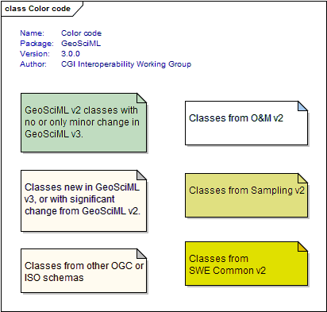
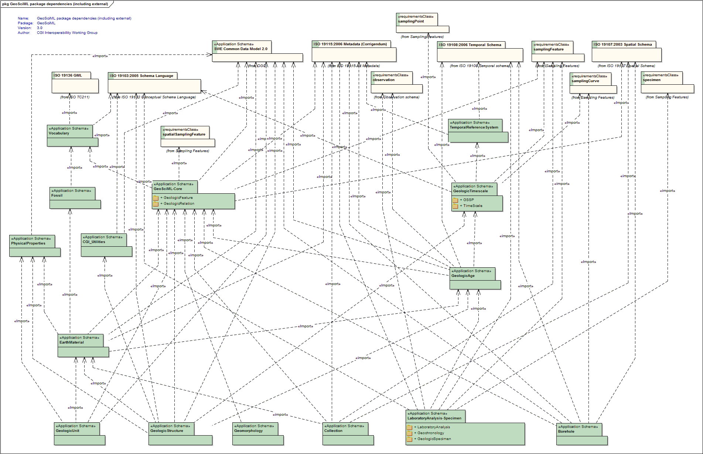

Package GeoSciML
GeoSciML v 3.0.0
GeoSciML is an application schema that specifies a set of feature-types and supporting structures for information used in the solid-earth geosciences.
GeoSciML is scoped approximately to the information required to construct geologic maps. "Map" is interpreted broadly, and not constrained to conventional 2-D semi-horizontal cartography, so the GeoSciML information structures also support representation of the distribution of geologic features on sections, along curvilinear-traverses and boreholes, and within volumetric samples, etc.
GeoSciML is primarily concerned with "interpreted" geology (units, structures, etc), but links to external schemas for the descriptions of observational data.
GeoSciML is factored into a set of sub-packages.
From v3.0 on the component packages are maintained separately.
---
GeoSciML was developed under the auspices of the Interoperability Working Group https://www.seegrid.csiro.au/wiki/bin/view/CGIModel/InteroperabilityWG/ of the Commission for the Management and Application of Geoscience Information http://www.cgi-iugs.org/, a commission of the International Union of Geological Sciences http://www.iugs.org .
For the latest release, please see http://geosciml.org
Copyright (c) Commission for the Management and Application of Geoscience Information 2010. All rights reserved.
Tagged Values |
||
| Tag | Value | Notes |
| owner | IUGS Commission for the Management and Application of Geoscience Information | |
| version | 3.0.0 | |
UML Diagram: Color code

UML Diagram: GeoSciML package dependencies (including external)
